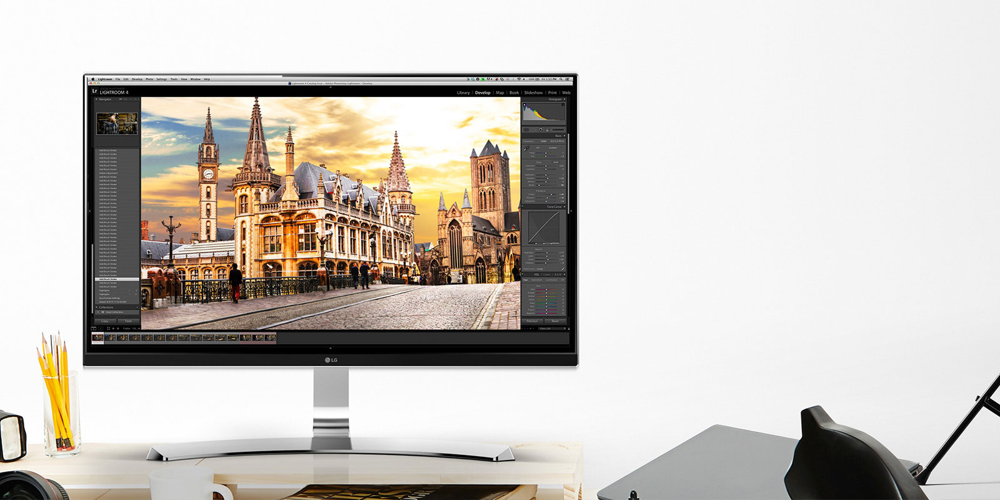

Monitoriai
Monitoriai | SHOPLENOVO

Susisiekime: +37067780199 info@shoplenovo.lt Ieškokite: Krepšelis: Prekių už: €0 Nešiojami Planšetės Stacionarūs Monitoriai Priedai Akcijos Servisas Kontaktai Krepšelis: Prekių už: 0.00 € Nešiojami Planšetės Stacionarūs Monitoriai Priedai Akcijos Servisas Kontaktai Susisiekime: +37067780199 info@shoplenovo.lt Ieškokite: Monitoriai Pradžia Monitoriai Filtras Valyti ThinkPad serija P serija Ekrano paviršius Blizgus Matinis Ekrano raiška Super Ultra WFHD WUXGA FHD QHD UHD UWQHD WQHD Įstrižainė 24 - 25 colių 25 - 26 colių 27 - 28 colių 31 - 32 colių 32 - 33 colių 34 - 35 colių 43 - 44 colių 14 - 15 colių 21 - 22 colių 22 - 23 colių 23 - 24 colių Ekrano technologija VA IPS Ypatybės Liečiamas ekranas Rūšiuoti pagal: Standartinė Pavadinimas (A - Z) Pavadinimas (Z - A) Kaina (Žema Aukšta) Kaina (Aukšta Žema) Prekės kodas (A - Z) Prekės kodas (Z - A) Rodyti: 15 25 50 75 100 LENOVO ThinkCentre 22 Gen3 Tiny-in-One (... Įstrižainė 21.5 coliai Rezoliucija FHD Suderinamumas Tiny sistemos P330, P320, M920(x), M720, M910(x), M710, M900(x), M700, M630e, M625, M600, M75q, M715, M93/p*, M83, M73*, M53, Chromebox Tiny Ekrano technologija IPS, LED, matinis Jungtys DisplayPort, USB, audio Ryškumas 250 nitų Reakcijos laikas 14 ms, 6 ms Ypatybės 720p kamera su mikrofonu Garsiakalbiai 2 x 2W Spalva Juoda €419 plačiau LENOVO ThinkCentre 24 Tiny-in-One Monito... Karta 3 Įstrižainė 23.8 coliai Rezoliucija FHD Ekrano technologija IPS, LED, matinis, liečiamas Jungtys DisplayPort, USB, audio Ryškumas 250 nitų Reakcijos laikas 7 ms Garsiakalbiai Integruotas 1 x 1.5W Spalva Juoda €369 plačiau LENOVO ThinkCentre 24 Tiny-in-One Monito... Įstrižainė 23.8 coliai Rezoliucija FHD Ekrano technologija IPS, LED, matinis Jungtys DisplayPort, USB, audio Ryškumas 250 nitų Reakcijos laikas 7 ms Garsiakalbiai Integruotas 1 x 1.5W Spalva Juoda €289 plačiau LENOVO ThinkCentre 27 Tiny-in-One Monito... Įstrižainė 27 coliai Rezoliucija WQHD Ekrano technologija IPS, LED, matinis, liečiamas Jungtys DisplayPort, HDMI, USB, audio Ryškumas 250 nitų Reakcijos laikas 7 ms Garsiakalbiai Integruoti 2 x 2W Spalva Juoda €509 plačiau LENOVO ThinkVision E24-20 (62A5MAT4EU) Įstrižainė 23.8 coliai Rezoliucija FHD Ekrano technologija IPS, LED, matinis Jungtys DisplayPort, HDMI, VGA Ryškumas 250 nitų Reakcijos laikas 14 ms Garsiakalbiai 2 x 1.5W Spalva Juoda €169 plačiau LENOVO ThinkVision L24q-30 (65FBGAC1EU) Įstrižainė 23.8 coliai Rezoliucija QHD Ekrano technologija IPS, LED, matinis Jungtys DisplayPort, HDMI Ryškumas 300 nitų Reakcijos laikas 4 ms Ypatybės AMD FreeSync Garsiakalbiai Nėra Spalva Juoda €219 plačiau LENOVO ThinkVision M14 monitorius (61DDU... Įstrižainė 14.0 colių Rezoliucija FHD Ekrano technologija IPS, LED, matinis Jungtys USB-C Ryškumas 300 nitų Reakcijos laikas 6 ms Garsiakalbiai Nėra Spalva Juoda €299 plačiau LENOVO ThinkVision P24h-20 (61F4GAT1EU) Įstrižainė 23.8 coliai Ekranas IPS, LED, matinis Rezoliucija WQHD Jungtys DP, HDMI, USB C-tipo, USB, audio, RJ-45 Ryškumas 350 nitų Reakcijos laikas 6 ms, 4 ms Garsiakalbiai 2 x 1W Spalva Juoda €339 plačiau LENOVO ThinkVision P24q-20 (61F5GAT1EU) Įstrižainė 23.8 coliai Rezoliucija WQHD @ 60Hz Ekrano technologija IPS, LED, matinis Jungtys HDMI, DP, USB, audio Ryškumas 350 nitų Reakcijos laikas 6 ms, 4 ms Garsiakalbiai Nėra Spalva Juoda €289 plačiau LENOVO ThinkVision P27h (61AFGAT1EU) Įstrižainė 27 coliai Rezoliucija WQHD Ekrano technologija IPS, LED, matinis Jungtys HDMI, DP, USB-C, USB, audio Ryškumas 350 nitų Reakcijos laikas 4 ms Garsiakalbiai Nėra Spalva Juoda €429 plačiau LENOVO ThinkVision P27h-20 (61E9GAT6EU) Įstrižainė 27 coliai Rezoliucija WQHD Ekrano technologija IPS, LED, matinis Jungtys DP, HDMI, USB-C, USB, audio, RJ-45 Ryškumas 350 nitų Reakcijos laikas 6 ms, 4 ms Garsiakalbiai 2 x 1W Spalva Juoda €479 plačiau LENOVO ThinkVision P27q-20 (61EAGAT6EU) Įstrižainė 27 coliai Rezoliucija WQHD Ekrano technologija IPS, LED, matinis Jungtys HDMI, DP, USB, audio Ryškumas 350 nitų Reakcijos laikas 6 ms, 4 ms Garsiakalbiai Nėra Spalva Juoda €429 plačiau LENOVO ThinkVision P27u Monitorius (61CB... Įstrižainė 27 coliai Rezoliucija UHD Ekrano technologija IPS, LED, matinis Jungtys HDMI, DP, USB-C, USB Ryškumas 350 nitų Reakcijos laikas 6 ms Garsiakalbiai Nėra Spalva Juoda €699 plačiau LENOVO ThinkVision P32p-20 (62A2GAT2EU) Įstrižainė 31.5 coliai Rezoliucija UHD Ekrano technologija IPS, LED, matinis Jungtys DP, HDMI, USB-C, USB, audio, RJ-45 Ryškumas 350 nitų Garsiakalbiai Nėra Reakcijos laikas 6 ms, 4 ms Spalva Juoda €899 plačiau LENOVO ThinkVision P32u (61C1RAT2EU) Įstrižainė 32 coliai Rezoliucija UHD Ekrano technologija IPS, LED, matinis Jungtys DP, HDMI, USB-C, USB, audio Ryškumas 300 nitų Reakcijos laikas 6 ms Garsiakalbiai Nėra Spalva Juoda €1,199 plačiau 1 2 3 | Rodoma nuo 1 iki 15 iš 38 (3 puslapių) informacija Apie SHOPLENOVO Sąlygos ir nuostatos Privatumo politika Apmokėjimas Pristatymas Grąžinimas Servisas ir garantija Kontaktai Papildoma informacija Naujienos bendraukime © 2019 UAB Life Ride . Visos teisės saugomos. Šioje svetainėje naudojame slapukus (cookies). Jie padeda matuoti auditorijos dydį ir naršymo įpročius. Plačiau apie tai: privatumo politika. Sutinku
Posted by Jack  Read more
Read more  Comments (15)
Comments (15)  2020.10.29 06:35
2020.10.29 06:35